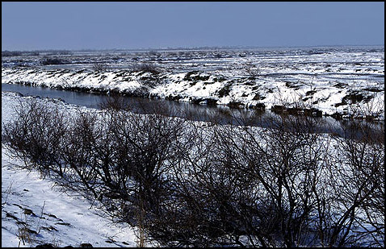

Το κλίμα στη περιοχή του δέλτα είναι μεσογειακό με επιδράσεις ηπειρωτικού στην ενδοχώρα.
Ο χειμώνας είναι βαρύς και παρατηρούνται πρώιμες και όψιμες ημέρες παγετού. Η κατανομή των βροχοπτώσεων είναι ανομοιόμορφη με ελάχιστες βροχές τους, κρίσιμους για την φυτοκοινότητα, καλοκαιρινούς μήνες.
Το καλοκαίρι από τα μέσα Ιουνίου ως τα μέσα Σεπτεμβρίου επικρατούν υψηλές θερμοκρασίες με υψηλότερες θερμοκρασίες τον Αύγουστο. Οι χαμηλότερες θερμοκρασίες παρατηρούνται τον Δεκέμβριο και τον Ιανουάριο.
Η μέση μεγίστη θερμοκρασία του έτους είναι 30,30 C.
Η μέση ελαχίστη θερμοκρασία του έτους είναι 1,30 C.
Η απολύτως μεγίστη θερμοκρασία είναι 39,00 C.
Η απολύτως ελαχίστη θερμοκρασία είναι -14,00 C.
Οι μέσες μηνιαίες θερμοκρασίες κυμαίνονται από 50 C τον Ιανουάριο ως 260 C τον Αύγουστο.
Η συχνή πτώση της θερμοκρασίας κάτω του 00 C, η εμφάνιση παγετών από το φθινόπωρο μέχρι την άνοιξη, σε συνδιασμό με τα λοιπά μετεωρολογικά φαινόμενα, δεν επιτρέπουν την καλλιέργεια φυτών ευπαθών στο ψύχος, όπως είναι τα εσπεριδοειδή, πρώιμα λαχανικά κ.λ.π.
Το μέσο ετήσιο ύψος υετού για την περίοδο 1951-1990 είναι 561,3 mm με ξηρότερο μήνα τον Αύγουστο (μέσο ύψος 12,3 mm) και πλουσιώτερο σε βροχές το Δεκέμβριο (μέσο ύψος 86,3 mm).
Οι ημέρες βροχής κατά την διάρκεια του χρόνου κατά μέσο όρο ανέρχονται σε 101.
Κατά την διάρκεια της αρδευτικής περιόδου που για το πλείστο των καλλιεργειών προσδιορίζεται μεταξύ Μαίου και Σεπτεμβρίου, οι βροχοπτώσεις ανέρχονται σε ύψος 126,6 mm βροχής που είναι τελείως ανεπαρκές για να καλύψει την κανονική απόδοση των θερινών καλλιεργειών χωρίς τη χορήγηση συμπληρωματικών ποσοτήτων νερού.
Η ξηρή περίοδος του έτους είναι το διάστημα από Απρίλιο ως Οκτώβριο και η υγρή περίοδος είναι το διάστημα από Νοέμβριο ως Μάρτιο.
Χαρακτηριστική είναι η εντατική ξηρασία της περιόδου Ιούνιος ως Αύγουστος στην οποία πολλές φορές προστίθεται και ο Μάιος και ο Σεπτέμβριος.
Πτώση χιονιού παρατηρείται κυρίως κατά τους χειμερινούς μήνες και κατά τα τελευταία χρόνια από το Δεκέμβριο μέχρι το Μάρτιο .
Ο μέσος αριθμός ημερών χιονοπτώσεων είναι 9,0 ανά έτος.
Το ύψος του χιονιού υπολογίζεται ότι συνήθως φτάνει τα 10-15 εκατ. του μέτρου.
Η συχνότητα εμφάνισης πτώσης χαλαζιού είναι 1,4 ημέρες το έτος
Οι παγετοί, με ημέρες εμφάνισης μερικού παγετού 9,8 παρατηρούνται συνήθως από τα μέσα Νοεμβρίου μέχρι τέλους Μαρτίου και σπάνια τον Απρίλιο, λόγω των ψυχρών μαζών αέρος που έρχονται από βόρεια ή βορειοδυτικά.
Οι ομίχλες σημειώνονται κατά τη διάρκεια του φθινοπώρου, του χειμώνα και της άνοιξης, κυρίως κατά τις νυκτερινές και πρωινές ώρες.
Ο μέσος αριθμός ημερών ομίχλης είναι 6,2.
Η δροσιά που είναι φαινόμενο ευεργετικό για τις καλλιέργειες, εμφανίζεται συνήθως την άνοιξη και κατά το φθινόπωρο.
Ο μέσος αριθμός ημερών δροσιάς είναι 17,0.
Η ηλιοφάνεια φθάνει τις 2.500 ώρες το χρόνο.
Ο μέσος ετήσιος αριθμός αιθρίας ανέρχεται σε 106,7 ημέρες και ο αριθμός των νεφοσκεπών ημερών σε 68,5.
Μεγαλύτερη ηλιοφάνεια παρατηρείται κατά τους θερινούς μήνες,όταν και οι ημέρες αιθρίας είναι περισσότερες.
Οι επικρατούντες άνεμοι στην περιοχή είναι οι Βορειοανατολικοί και ακολουθούν οι Βόρειοι, Νοτιοδυτικοί, Ανατολικοί, Νότιοι, Δυτικοί και Νοτιοανατολικοί.
Οι ισχυρότεροι άνεμοι, μέχρι και 10 Beaufort εντάσεως, παρουσιάζονται τον χειμώνα και μερικές φορές το καλοκαίρι κατά τον Ιούλιο. Επίσης το χειμώνα και το φθινόπωρο επικρατούν βόρειοι άνεμοι ενώ την άνοιξη και το καλοκαίρι νότιοι, σφοδροί μερικές φορές, που επιτείνουν τις δυσμενείς συνθήκες της ξηροθερμικής περιόδου. Τα κύματα της θάλασσας μπορεί να φτάσουν το μέγιστο ύψος των 3,5 μ. κατά τη διάρκεια ισχυρών νοτίων ανέμων.
Η επικράτηση βορειοανατολικής και βόρειας διεύθυνσης ανέμων, οφείλεται στη γειτνίαση του σιβηρικού αντικυκλώνα και στην ομαλότητα της ανατολικής Θράκης που επιτρέπει ανεμπόδιστα την πνοή των ανέμων από τον Εύξεινο Πόντο προς το Αιγαίο Πέλαγος.